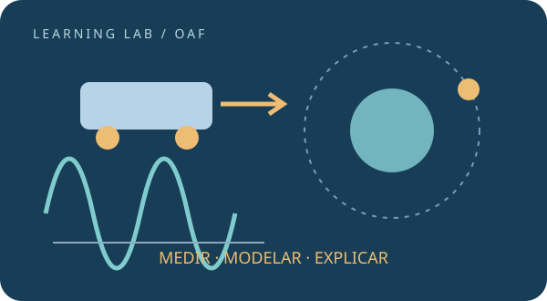

Comprendé y resolvé
Revisá los requisitos, leé una explicación y resolvé el desafío antes de abrir el ejemplo. Usá la pista y el control para detectar dudas.
OLIMPÍADA ARGENTINA DE FÍSICA · PREPARACIÓN EN ESPAÑOL
Aprendé por tu cuenta con explicaciones, ejemplos resueltos, reglas para recordar e instrumentos que vos hacés funcionar.
Probá: encuentros, Arquímedes, energía, circuitos, lentes o fotones.
Cargando temas…

PREDECIR → INVESTIGAR → COMPARAR → EXPLICARDOS RUTAS PARA UN PROGRAMA COMÚN
Construí fundamentos con las lecciones, ejemplos y primeros ensayos de todas las áreas.
Empezar por la base →RUTA DE ESTUDIO · PROFUNDIZACIÓNCombiná ideas, analizá límites de los modelos y compará investigaciones después de completar la base.
Profundizar y justificar →Según las normas 2022, Nivel 2 agrega una extensión de mayor complejidad a la prueba básica. El PDF no divide un temario por nivel; estas rutas son una organización didáctica de Learning Lab.
PROGRAMA ESQUEMÁTICO Y HABILIDADES EXPERIMENTALES
Medí, estimá incertidumbres y obtené relaciones a partir de gráficos.
Explorar el área →5 UNIDADESDe encuentros y fuerzas a conservación, rotación, gravitación y fluidos.
Explorar el área →2 UNIDADESConectá temperatura, calor, gases y transformación de energía.
Explorar el área →2 UNIDADESInvestigá cargas, circuitos, campos e inducción electromagnética.
Explorar el área →1 UNIDADESMedí períodos y longitudes de onda; explicá superposición e interferencia.
Explorar el área →2 UNIDADESConstruí imágenes y explorá fotones, espectros y fenómenos nucleares.
Explorar el área →UNA RUTINA SIN DEPENDER DE UN PROFESOR
Revisá los requisitos, leé una explicación y resolvé el desafío antes de abrir el ejemplo. Usá la pista y el control para detectar dudas.
Guardá una predicción. Mové el material al destino y operá el montaje sobre la mesa. Si te trabás, la ayuda completa solo ese paso.
Registrá dos condiciones, explicá lo que cambia y terminá con repaso. Los enlaces y reintentos te llevan a la lección que necesitás revisar.